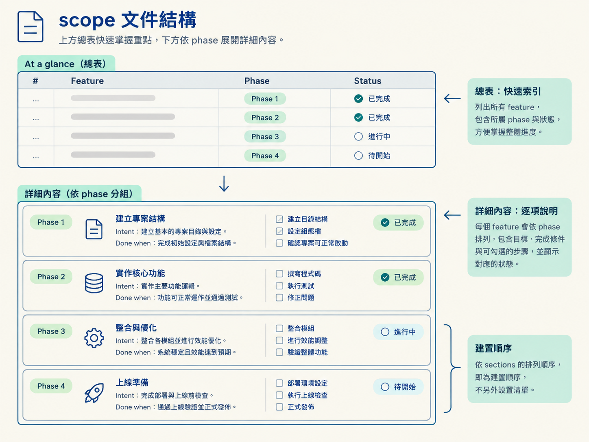

scope 是產品範圍與建置進度的查閱文件，固定由 At a glance 表與依 phase 分組的 feature sections 組成。
scope 的檔案位置依產品規模決定，檔名使用語意名稱，不使用編號。
| 產品規模 | 檔案形狀 |
|---|---|
| 小型產品 | docs/scope/scope.md，單一檔案 |
| 大型產品（約十多個以上且分屬明顯不同領域的功能） | docs/scope/index.md，加上每個 epic 一個 docs/scope/<epic>.md |
| Monorepo | 每個 workspace 使用自己的 docs/scope/<workspace>/，頂層再用 docs/scope/index.md 映射各 workspace |
預設從單一檔案開始。scope.md 大到不容易掃讀時，才升級成 epic split：
scope.md 改名為 index.md。<epic>.md。不會一開始就拆分。若 docs/ 本身是發佈用的文件站台，整套 scope 改放在 .workflow/scope/。
scope 只有兩個部分：
建置順序就是 sections 的排列順序，不另設一份需要同步的「建置順序」清單。

At a glance 表固定有四欄：
| 欄位 | 內容 |
|---|---|
# | 功能編號 |
| Feature | 功能名稱 |
| Phase | 功能所屬階段 |
| Status | 功能狀態 |
## At a glance
| # | Feature | Phase | Status |
|---|--------------------|------------|-------------|
| 1 | Stack & architecture | Foundation | in-progress |
| 2 | Coding standards | Foundation | planned |
| 3 | Core standup loop | Slice 1 | planned |每個 feature section 的標題格式是 ### <N>. <名稱>。標題只有在真的有資訊時，才加上短標籤，例如 needs a decision、approach override，或像 · GA 這樣的 workflow tier override。
標題下方固定包含：
Done when:，作為驗收標準的種子。不使用 Title | P0 | inherit | … 這種以直線分隔的 metadata 列。
尚未設計的 feature 只有一個框，當作入口命令。捕捉到 spec 之後，/architect 會把它填成「built ready」的多框形狀：
### 3. Data model · in-progress
Core entities every feature builds on.
**Done when:** entities support later slices without a breaking migration.
- [x] Design it (spec): `/architect data model`
- [ ] Build it: `/develop data model`
- [ ] Schema + constraints
- [ ] Row-level security
- [ ] Apply migration, generate types
- [ ] Verify it: `/check verify data model`
- [ ] Test it: `/test data model`
Spec 0002 · code (filled by /develop)| 項目 | 規則 |
|---|---|
| Atomic build tasks | 永遠放在 spec 的 ## Build plan。 |
| Scope 內容 | 只放從 spec 彙總出的 2 到 5 個里程碑。 |
| Decision box | 每個 feature 恰好有一個，標籤以 (spec) 結尾。 |
| Execution box | 除 decision box 外的其他框；/architect 不會勾選這些框。 |
Feature 尚未有 spec 時，只有一個框，指向下一個命令：
| 條件 | 入口命令 |
|---|---|
| 需要決策 | /architect <feature> |
| 不需要決策 | /develop <feature> |
| Foundation 的 standards and tooling | 第一個框使用 /audit |
狀態只出現在兩個位置：At a glance 表，和 feature 標題旁。
| 狀態 | 設定者 | 定義 |
|---|---|---|
planned | /scope | 已排進計畫，尚未開始。 |
in-progress | /architect 捕捉 spec 後；/develop 建置中 | 設計完成或正在建置。 |
done | 由你宣告；/sync 對帳時也可標記 | 這條流程已建置並完成驗證。 |
existing | /scope，用於 brownfield 登錄 | 在這套流程開始前就已存在。 |
dropped | replan | 已移出範圍，保留歷史，不再計入工作量。 |
planned 的流程狀態依序可推進為 in-progress，再到 done。
existing 與 done 的定義不同：done 代表這條流程親手建置並驗證過；existing 代表它早於這套流程。/develop 與 /sync 永遠不修改 existing 的列。
下一步的規則只有一條：下一個未打勾的框，就是下一步。
這個框永遠是命令或可追蹤的里程碑，因此不需要另外加入 Next: 一行。
| 項目 | 規則 |
|---|---|
| 狀態位置 | 只顯示在 At a glance 表與 feature 標題旁。 |
| 其他段落 | 只放 intent、完成定義、任務與指標。 |
| 事實 | 每個事實只出現一次。 |
| 指標行 | spec <n> · code in <path> 只在對應內容確實存在後顯示。 |
| 未設定內容 | 不留下 n/a 或 inherit 等佔位字。 |
scope 固定由一個 At a glance 表與依 phase 分組的段落組成。Feature 會從「一個入口框」長成「built ready」的多框形狀。狀態包含
planned、in-progress、done、existing、dropped；下一步永遠是第一個未打勾的框。
下一個查閱項目是四種 build approach 的取捨與排列方式。